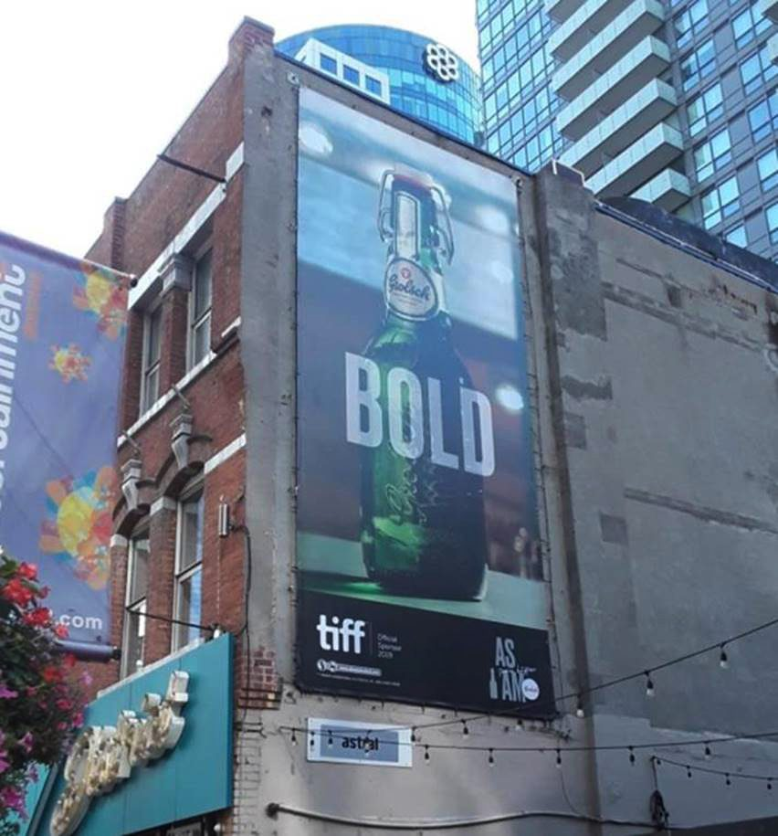

Grolsch is a premium swing-top lager with centuries of heritage — and heritage alone doesn't sell a pint in Toronto. As the official beer of the Toronto International Film Festival, the brand needed more than a logo on a step-and-repeat. It needed a real presence at the festival.
We ran the whole TIFF platform, from first exploration to on-premise activation — print, digital, social, out-of-home, retail and on-pack.
More than fifty distinct pieces of media, plus the retail, on-pack and on-premise program that carried the brand from cinema queues to bar tables.
Over fifty distinct pieces across print, digital, social and OOH — including the CHARACTER and BOLD billboards over downtown Toronto and program-book creative shot behind the scenes at the festival.
The on-premise centrepiece: part party, part trivia, part TIFF-themed game. A social lubricant with the beer at the middle of it.
In core bars and restaurants, patrons got a deck of trivia cards and a bag of popcorn — a game that started cinema conversations and gave the sales team a reason to be at the table.
Summer patios turned Grolsch-green — the brand poured where Toronto actually drinks, not just where it advertises.


 →
→